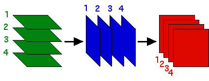

| Recall the order in which the forbidden and allowed triples of
two step memory are presented, |
|  |
| we see that in order to allow the pair i → j, we must allow
all triples |
| 1 → i → j, 2 → i → j, 3 → i → j,
and 4 → i → j. |
| We write this with the shorthand |
| * → i → j |
| Looking at the orders of the row, column, and face lables, we see this
1-step IFS and 2-step IFS will produce the same pictures.
Click each table to see the corresponding picture. |
|
| Here are two examples made with 1-step memory. Find the
corresponding 2-step memory tables and test them
with the software. Click each table for
the solution. |
|
| Based on these examples, you should be able to formulate a condition guaranteeing a
2-step memory table will produce a picture that can be generated by a 1-step
memory table. From this, can you find 2-step memory pictures that cannot be
generated by 1-step memory? Test your ideas with the software,
then click here for an answer. |